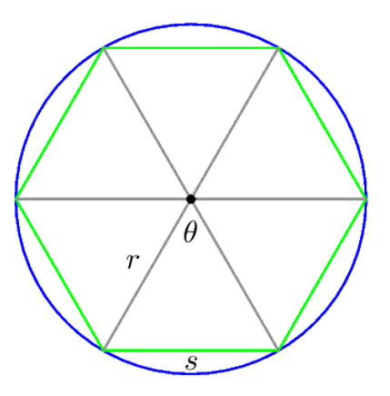

Modern Calculus was formulated by Sir Isaac Newton and Gotfriend Leibniz in 1687. But the great mathematician, Archimedes, was really close to developing Calculus in 300 B.C. (Almost 2000 years before Newton and Leibniz!) with the formation of the limit: the starting point of well-defined calculus (though he never used the word ``limit" in his construction.).
Subsection2.3.1Archimedes of Syracuse
Subsection2.3.2What is this weird number?
To illustrate how Archimedes was thinking about calculus two thousand years before calculus was a known thing, we should think about circles. Ancient cultures were puzzled that every circle carried an unusual trait. It seemed that for a circle with diameter \(d\text{,}\) its circumference was predictable... kind of.
Activity2.3.1.Circumference and Diameter.
How many diameter lengths is the circumference of a circle? SETUP SOME ACTIVITY WITH THIS.
It appears that a circle with diamer \(d\) has a circumference a bit more than \(3d\text{.}\) This fact was true with every circle, and each culture attempted by their own estimates to calculate the myserious number that was the ratio of circumference to diameter \(c/d\text{.}\)
So what is this number? We define \(\pi\) as \(c/d\) for the circle with circumference \(c\) and diameter \(d\text{.}\) The Babylonians found \(3.125\) to approximate \(\pi\text{,}\) and the Egyptians used \(3.1605\) for their estimate. You probably learned something like \(3.14\text{.}\) Through modern techniques, computers can now calculate \(\pi\) to millions of digits, but the true value of \(\pi\) eluded the greatest of minds for centuries.
For reference, here are the first 30 digits of \(\pi\text{.}\)
Archimedes was interested in figuring out the very mysterious number of \(\pi\text{,}\) and eventually estimated \(\pi\) to be \(21/7 \leq \pi \leq 210/71\) (or between \(3.1408 \text{ and } 3.1429\)). That’s really, really close for 300 BC.
How did he develop such a good estimate? Archimedes was exteremly good at calculations, and he knew polygons very well.

Figure2.3.1.
He first inscribed a hexagon in a circle with radius \(1\) like in [image] [STRUCT].[NUM], and then he noticed that the hexagon’s area is a rough estimate of the area of the circle. Let’s work that out for ourselves. We can find the hexagon’s area by dividing it into six equilateral triangles and finding their area.
Question2.3.2.The Hexagon’s Area.
Find the area of one equilateral triangle using the formula \(A = 1/2bh\) for base \(b\) and height \(h\text{.}\)
Solution.
The triangle is equilateral, so it has base length \(1\text{.}\) Using pythagorean theorem, we find the height to be \(\sqrt{3}/2\text{.}\) So the area of the triangle is \(\dfrac{1}{2}\cdot 1 \cdot \left( \dfrac{\sqrt{3}}{2}\right) = \dfrac{\sqrt{3}}{4}.\) So the area of the hexagon is \(6 \cdot \dfrac{\sqrt{3}}{4} \approx 2.5980762\text{.}\)
Okay... that’s not a great estimate for \(\pi\text{,}\) but Archimedes realized a dodecagon’s area would be a better estimate. Why stop there though? he calculated areas of \(24\)-gons, \(48\)-gons, and \(96\)-gons (all by hand and without modern trigonometry), all inscribed in a circle of radius 1. Archimedes knew that these areas trend towards some number really close to what we now call \(\pi\text{.}\)
In the illustration below, you can see how the areas of \(n\)-gons trend towards \(\pi\) as \(n\) goes to \(\infty\text{.}\) Wait... that sounds like a limit! Archimedes build a limit that in 300 BC.